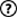

Levels
How to Play
Nonograms, also known as Picross or Griddlers, are picture logic puzzles in which cells in a grid must be colored or left blank according to numbers at the side of the grid to reveal a hidden picture. In this puzzle type, the numbers are a form of discrete tomography that measures how many unbroken lines of filled-in squares there are in any given row or column. For example, a clue of "4 8 3" would mean there are sets of four, eight, and three filled squares, in that order, with at least one blank square between successive groups.
These puzzles are often black and white—describing a binary image—but they can also be colored. If colored, the number clues are also colored to indicate the color of the squares. Two differently colored numbers may or may not have a space in between them. For example, a black four followed by a red two could mean four black boxes, some empty spaces, and two red boxes, or it could simply mean four black boxes followed immediately by two red ones.
Tools
Default  : With this tool you can use a black cell, a x mark and a white cell. The x mark can help you to mark the cells that you know that they can't be black
: With this tool you can use a black cell, a x mark and a white cell. The x mark can help you to mark the cells that you know that they can't be black
Black cell  : With this tool you can use only a black cell.
: With this tool you can use only a black cell.
X mark  : With this tool you can use only a x mark.
: With this tool you can use only a x mark.
White cell  : With this tool you can use only a white cell.
: With this tool you can use only a white cell.
Undo : With this tool you can undo your choice. it can store the last 10 choices you make.
Clear : With this tool you can clear your procress.
Help : With this tool you can find out a black cell that is correct. You can use 3 times in a stage
Home  : With this tool you can go back to the menu.
: With this tool you can go back to the menu.